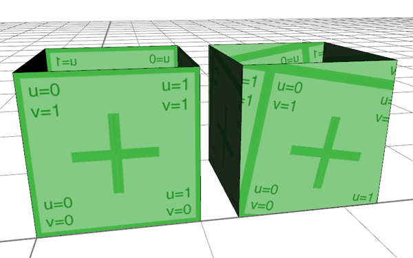

rotateUV
Synopsis
rotateUV(uvSet, rotAngle)
Parameters
- uvSet
Number of texture coordinates set (integer number in [0,5]). The numbering corresponds to the texture layers of the material attribute, see also Texturing: Essential Knowledge. - rotAngle
Defines the angle of the rotation.
Returns
Rotates the texture coordinates (uvSet).
This function rotates the texture coordinates (uvs) of the current shape by the rotAngle.
Note.1: The rotation center is at the texture position u=0 and v=0.
Note.2: Rotating uvs works only after the uvs have been projected.
Related
- deleteUV operation
- normalizeUV operation
- projectUV operation
- scaleUV operation
- setupProjection operation
- texture operation
- translateUV operation
- material.map attribute
Examples
brickMap = "assets/bricks.jpg"
dirtMap = "assets/dirt.jpg"
randBuildingHeight = 1
Lot -->
s('.75,'1,'.75)
center(xz)
extrude(world.up, randBuildingHeight)
comp(f){side: Facade | top: set(material.color.a, .3) Roof.}
Facade -->
# color, uv set 0
setupProjection(0, scope.xy, scope.sx, scope.sy)
texture(brickMap)
projectUV(0) # projection of the uvs
rotateUV(0,10) # rotate command after the projection
Example with standard uvs and rotated uvs:

Copyright ©2008-2016 Esri R&D Center Zurich. All rights reserved.